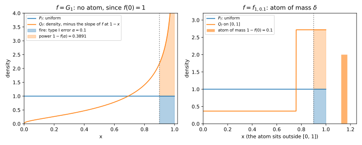
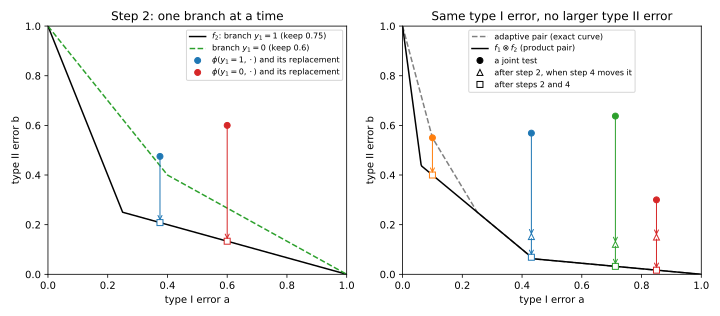
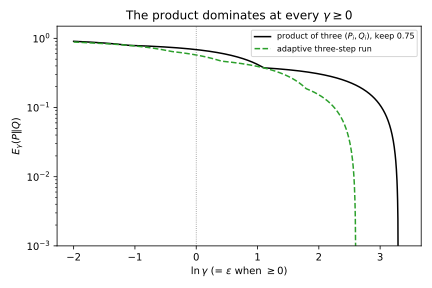
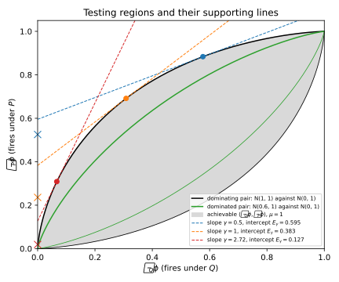
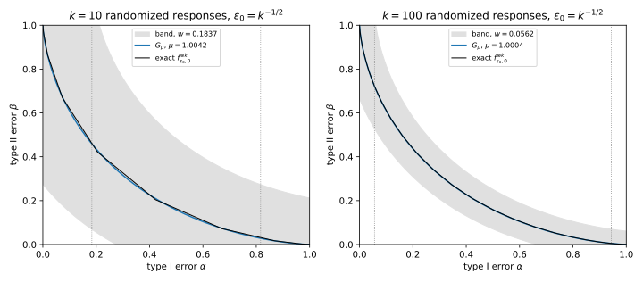
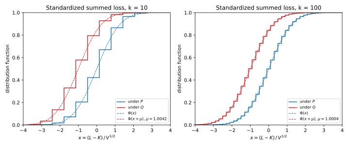
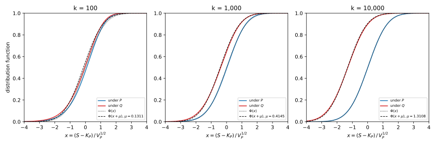
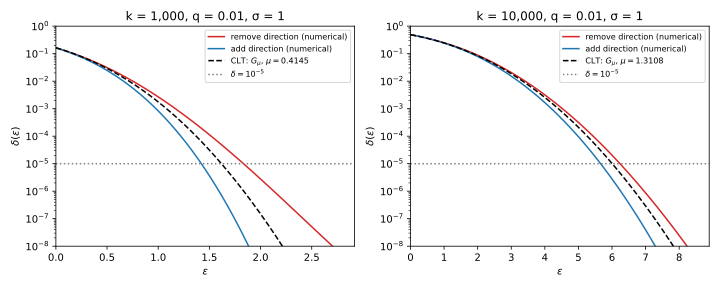

Appendix K — Composition of trade-off functions
Two chapters of Part 4 compose differential privacy (DP) guarantees step by step. They are f-DP and Gaussian DP and Numerical accounting, and they lean on five results that they state but do not prove, and this appendix derives all five. Each result is about how well an attacker can tell two output distributions apart, which the chapters measure by a curve of the attacker’s two kinds of error, the trade-off curve defined below.
The first result says that any curve with the four properties of a trade-off curve really is the curve of some pair of distributions. The next two say that running mechanisms one after another, even when each one is chosen after seeing the earlier outputs, leaks no more than running fixed, independent copies of the worst step. One of them says it with trade-off curves and the other with hockey-stick divergences, a second measure of the same leak. The last two are central limit theorems: when there are many small steps, the composed curve comes close to the curve of two normal distributions with the same variance. The first three results share one move. You take a test that an attacker runs on one pair of distributions and replace it, piece by piece, by a test on another pair that does at least as well. The central limit theorems instead follow the best tests of the composed pair and watch their errors approach those of the two normal distributions.
Table K.1 lists the five derivations and where the book states or uses each one. Each section restates the terms it needs, so the table only points the way.
| Derivation | What it proves | Stated or used in |
|---|---|---|
| Section K.1 | Every convex, non-increasing, continuous \(f \le 1 - \alpha\) is the trade-off curve of a pair | Section 4.5, Section 32.3, Section 32.6 |
| Section K.2 | Composition of \(f\)-DP, adaptive steps included, and the tensor product is well defined | Section 32.6 (Equation 32.12) |
| Section K.3 | Dominating pairs survive adaptive composition | Section 34.4, Section 34.5, Section 37.2 |
| Section K.4 | The \(f\)-DP central limit theorem with its Berry–Esseen band | Section 32.7 (Equation 32.14) |
| Section K.5 | The central limit theorem for the Poisson-subsampled Gaussian | Section 32.8 (Equation 32.17), Section 34.8, Section 37.2 |
Notation. The notation is that of f-DP and Gaussian DP. A mechanism \(M\) runs either on a dataset \(D\) or on a neighbouring dataset \(D'\), written \(D \sim D'\), which adds or removes one record (the results hold for any neighbouring relation). Write \(P = M(D)\) for the distribution of its output on \(D\) and \(Q = M(D')\) for the distribution on \(D'\). Their densities, or probabilities for discrete outputs, are \(p\) and \(q\).
A test \(\phi\) looks at the output \(y\) and fires, deciding that the data was \(D'\), with probability \(\phi(y)\). How often it fires on \(D\) is its type I error \(\alpha = \mathbb E_P[\phi]\). How often it fires on \(D'\) is its power \(\mathbb E_Q[\phi]\), and how often it stays silent there is its type II error \(\beta = 1 - \mathbb E_Q[\phi]\).
The trade-off function \(T(P, Q)\) gives, at each type I error \(\alpha\), the smallest type II error that any test with type I error at most \(\alpha\) can reach. A pair always means such a pair of distributions \((P, Q)\), and its curve means \(T(P, Q)\). A mechanism is \(f\)-DP when the curve of every neighbouring pair lies on or above the curve \(f\), so that no test does better than \(f\) allows. The privacy loss of an output measures how much more likely the output is on \(D\) than on \(D'\), \[L(y) = \ln\frac{p(y)}{q(y)}. \tag{K.1}\]
One fact from Hypothesis testing carries most of the weight, so here it is once. The Neyman–Pearson lemma (Section 4.4) says that the best test at any type I error is a likelihood-ratio test. Such a test fires where \(q/p\) is above a threshold and stays silent where it is below. On outputs exactly at the threshold it may fire with any probability, and this coin flip is what lets the test spend its type I error exactly when the threshold outputs carry positive mass. For every \(\alpha \in (0, 1]\) such a test exists with type I error exactly \(\alpha\), and its type II error is \(T(P, Q)(\alpha)\). At \(\alpha = 0\) the best test fires only on outputs that \(P\) never produces. In terms of the loss, \(q/p = e^{-L}\), so the best tests fire when \(L\) is small.
K.1 Every trade-off function has a canonical pair
K.1.1 What the chapter uses
f-DP and Gaussian DP calls \(f\) a trade-off function when it is the curve \(T(P, Q)\) of some pair (Section 32.3). Every such curve has four properties: it is non-increasing, convex and continuous, and it lies on or below the line \(1 - \alpha\) of the test that ignores the output and fires at random. The composition theorem of the next section needs the converse. It starts from curves \(f_1, \dots, f_k\), one per step, that are only known to have the four properties, and it needs a pair of distributions behind each one. The converse says that the four properties are enough, and it builds the pair.
Let \(f\colon [0, 1] \to [0, 1]\) have the four properties. Let \(P_f\) be the uniform distribution on \([0, 1]\), and let \(Q_f\) put mass \(f(1 - x)\) on each interval \([0, x]\), \[Q_f\big([0, x]\big) = f(1 - x) \quad\text{for } x \in [0, 1]. \tag{K.2}\] This may leave \(Q_f\) short of total mass 1. So \(Q_f\) also has an atom, a single point carrying positive probability, at a point outside \([0, 1]\), say at 2, and the atom carries the missing mass \(1 - f(0)\). Then \[T(P_f, Q_f) = f. \tag{K.3}\] The pair \((P_f, Q_f)\) is the canonical pair of \(f\). Hypothesis testing already gives this construction in one paragraph of Section 4.5. The \(f\)-DP chapter cites only the forward statement, that every curve of a pair has the four properties. This section spells the converse out step by step, because the next section depends on it.
K.1.2 The idea
Take \(P_f\) uniform, so that a test which fires on an interval of length \(\alpha\) has type I error exactly \(\alpha\). Then shape \(Q_f\) so that firing on the top interval \((1 - \alpha, 1]\) misses exactly \(f(\alpha)\) of \(Q_f\). That forces the mass of \(Q_f\) below \(1 - \alpha\) to be \(f(\alpha)\), which is the formula above. A value \(f(0)\) below 1 means that some test reaches type II error \(f(0) < 1\) with no type I error at all. So \(Q_f\) needs mass \(1 - f(0)\) in a place where \(P_f\) has none, and the atom outside \([0, 1]\) supplies exactly that mass. What remains is to check that these top-interval tests are the best tests. Step 2 below shows that convexity makes the density of \(Q_f\) rise from left to right. Since \(P_f\) has the flat density 1, the likelihood ratio rises too, and the Neyman–Pearson lemma says the best tests fire where the ratio is highest, which is at the top.
A Gaussian example makes the construction concrete. The Gaussian curve \(G_\mu\) is the curve of the normal distribution \(\mathcal N(0, 1)\) against the normal distribution \(\mathcal N(\mu, 1)\) with its mean shifted by \(\mu\). A mechanism whose neighbouring pairs all have curves on or above \(G_\mu\) satisfies Gaussian differential privacy (GDP) with parameter \(\mu\), written \(\mu\)-GDP. For \(\mu = 1\) the canonical pair is easy to recognize. Let \(Z\) be standard normal and \(\Phi\) its distribution function. Then \(P_f\) is the law, meaning the distribution, of \(\Phi(Z)\), which is uniform on \([0, 1]\) because for every \(x \in [0, 1]\) \[\Pr[\Phi(Z) \le x] = \Pr[Z \le \Phi^{-1}(x)] = x. \tag{K.4}\] And \(Q_f\) is the law of \(\Phi(Z + 1)\). Applying the increasing function \(\Phi\) to both \(\mathcal N(0, 1)\) and \(\mathcal N(1, 1)\) is a one-to-one relabelling of the outputs, so it changes no test’s errors and the pair still has curve \(G_1\). Figure K.1 shows this pair and the test at \(\alpha = 0.1\).
K.1.3 Derivation
- \(Q_f\) is a probability distribution. Write \(F(x) = f(1 - x)\). As \(x\) grows, \(1 - x\) shrinks, and \(f\) is non-increasing, so \(F\) is non-decreasing. Property \(f(\alpha) \le 1 - \alpha\) at \(\alpha = 1\) forces \(f(1) = 0\), so \(F(0) = 0\), and \(F(1) = f(0) \le 1\). The atom adds the missing mass \(1 - f(0)\), so the total is 1.
- \(Q_f\) has a non-decreasing density on \([0, 1]\). This step uses three standard facts about a convex function, which are cited (Rockafellar 1970, §§23–24). It has a slope \(f'(\alpha)\) at every point except at most countably many kinks, its slope never decreases as \(\alpha\) grows, and it is the integral of its slope. So \(F\) has density \(F'(x) = -f'(1 - x)\), which is minus the slope of \(f\) at \(1 - x\). Now let \(x\) grow. Then \(1 - x\) shrinks, and because the slope of \(f\) never decreases as its argument grows, it can only fall, that is become more negative, as its argument shrinks. So \(f'(1 - x)\) can only become more negative, and the density \(-f'(1 - x)\) can only grow. At a kink the density has a jump, and either one-sided value can stand for it.
- The likelihood ratio is non-decreasing. The density of \(P_f\) is 1 on \([0, 1]\), so the likelihood ratio \(q/p\) equals the density of \(Q_f\) there. At the atom, \(P_f\) has no mass, so the ratio is infinite.
- The top-interval tests are likelihood-ratio tests. Fix \(\alpha \in (0, 1]\) and let \(\phi_\alpha\) fire on the atom and on every \(x > 1 - \alpha\). Take the threshold \(\tau\) to be the density just to the left of \(1 - \alpha\), which is well defined even when \(1 - \alpha\) is a kink, because a non-decreasing function has a limit from each side. By step 3, the ratio is at least \(\tau\) wherever \(\phi_\alpha\) fires and at most \(\tau\) wherever it is silent. Outputs with ratio exactly \(\tau\) are ties, and the lemma allows any behaviour on ties. So \(\phi_\alpha\) is a likelihood-ratio test, and no test with type I error at most \(\alpha\) has a smaller type II error.
- Read off the errors. The type I error of \(\phi_\alpha\) is the uniform mass of \((1 - \alpha, 1]\), which is \(\alpha\), since the atom has no \(P_f\)-mass. Its type II error is the \(Q_f\)-mass where it is silent, \(Q_f([0, 1 - \alpha]) = F(1 - \alpha) = f(\alpha)\). So \(T(P_f, Q_f)(\alpha) = f(\alpha)\) for \(\alpha \in (0, 1]\). At \(\alpha = 0\) the best test fires on the atom only, and it misses \(F(1) = f(0)\).
K.1.4 Checking it
The script of this appendix, apx_composition.py, coarsens each canonical pair into 1000 equal cells of \([0, 1]\), plus the atom. It then computes the trade-off curve of this finite pair exactly, by sorting the cells by likelihood ratio. Reporting only the cell that the output fell in is post-processing, a function applied to the output, and no test can gain from seeing less, so the coarse curve can only lie above \(f\). It still touches \(f\) at the cell edges, because a test that fires on the top cells fires on a top interval, and that test is still available with the same errors. For \(f = G_1\) the largest gap is \(2.0\times10^{-3}\), near \(\alpha = 0\), where \(G_1\) is steepest. The second example is the curve of an \((\varepsilon, \delta)\)-DP guarantee, which the chapter writes as a curve made of two straight lines, \[f_{\varepsilon, \delta}(\alpha) = \max\big(0,\; 1 - \delta - e^\varepsilon \alpha,\; e^{-\varepsilon}(1 - \delta - \alpha)\big). \tag{K.5}\] With \(\varepsilon = 1\) and \(\delta = 0.1\) its largest gap is \(8.3\times10^{-5}\). Both gaps shrink as the cells shrink, which is what Equation K.3 predicts.

In Figure K.1 (right), the density of \(Q_f\) on \([0, 1]\) has two levels, \(e^{-1}\) and \(e\), which are minus the two slopes \(-e^{-1}\) and \(-e\) of \(f_{1, 0.1}\). The step sits at \(1 - \alpha^*\), where \(\alpha^*\) is the corner of \(f_{1, 0.1}\), the point where its two lines meet. Setting \(1 - \delta - e\,\alpha = e^{-1}(1 - \delta - \alpha)\) with \(\delta = 0.1\) gives \(\alpha^* = 0.9/(1 + e) = 0.2420\). The atom carries the \(\delta = 0.1\) of mass that a test can catch with no type I error.
K.2 Composition of f-DP, adaptive steps included
K.2.1 What the chapter uses
When an attacker sees the outputs of two mechanisms, it faces two joint distributions, one for \(D\) and one for \(D'\). The simplest case is two independent mechanisms. Their joint output then has the product distribution \(P \times P'\), under which the two coordinates are drawn independently, one from \(P\) and one from \(P'\). The chapter defines the tensor product of two trade-off functions \(f = T(P, Q)\) and \(g = T(P', Q')\) as the curve of the product pair, \[f \otimes g = T(P \times P', Q \times Q'). \tag{K.6}\] The composition theorem then says that composing \(f_i\)-DP mechanisms gives an \(f_1 \otimes \dots \otimes f_k\)-DP mechanism, even when each mechanism is chosen after seeing the earlier outputs. In symbols, suppose \(M_1\) is \(f_1\)-DP and, for every value \(y_1\) of its output, the second mechanism \(M_2(\cdot\,; y_1)\) is \(f_2\)-DP. Then the pair of outputs \((y_1, y_2)\) satisfies \[T\big((M_1, M_2)(D), (M_1, M_2)(D')\big) \ge f_1 \otimes f_2 \quad\text{for all neighbours } D \sim D', \tag{K.7}\] and the same holds for \(k\) steps with \(f_1 \otimes \dots \otimes f_k\). Section 32.6 states this theorem (Dong, Roth & Su 2022, Theorem 3.2) and leaves three gaps. The chapter proves the non-adaptive case through Blackwell’s theorem, a cited result that compares two pairs through post-processing. For the adaptive case, the chapter reports that Dong et al. prove it “with the Neyman–Pearson lemma alone” and uses the result without a proof. Finally, the chapter cites without proof the fact that \(f \otimes g\) does not depend on which pairs represent \(f\) and \(g\) (their Definition 3.1), which is what makes the tensor product well defined. This section proves the non-adaptive case, the adaptive case and this independence of the pairs, using only the Neyman–Pearson lemma.
K.2.2 The idea
Take the adaptive example of Rényi DP (Table 29.5), which uses randomized response, a mechanism that reports a person’s bit truthfully with some keep-probability and flips it otherwise. One person’s bit is 1 in \(D\) and 0 in \(D'\). The first step keeps the bit with probability 0.75, and the second step’s keep-probability depends on the first output, 0.75 if it was 1 and 0.6 if it was 0. Each step’s curve lies on or above \(f\), the curve of randomized response with keep-probability 0.75. The reason is that a keep-probability closer to \(\frac12\) makes the report closer to a fair coin, and so hides the bit better. So the theorem promises that the joint curve lies on or above \(f \otimes f\), the curve of two independent runs with keep-probability 0.75. Table K.2 lists the four joint outputs.
| \((y_1, y_2)\) | \(p\), bit 1 (\(D\)) | \(q\), bit 0 (\(D'\)) | \(q/p\) |
|---|---|---|---|
| (1, 1) | 0.5625 | 0.0625 | 0.111 |
| (1, 0) | 0.1875 | 0.1875 | 1 |
| (0, 1) | 0.15 | 0.3 | 2 |
| (0, 0) | 0.1 | 0.45 | 4.5 |
An attacker’s joint test can be read one branch at a time, where a branch is one value of the first output. For each first output \(y_1\), what the test does with \(y_2\) is a test of the second step’s pair on that branch. The plan is to swap each branch’s pair for a fixed pair whose curve is exactly \(f\), here randomized response with keep-probability 0.75 itself, and each branch’s test for the best test of that fixed pair at the same type I error. The type I error does not change, and the type II error cannot grow, because \(f\) lies on or below that branch’s curve. After the swap every branch uses the same fixed pair, so the second output no longer depends on the first, and the joint pair is a product. The first coordinate is then swapped in the same way, now one value of the second output at a time. The result is a test on the product pair that is at least as good as the attacker’s test, so no attacker beats \(f \otimes f\).
Here it is on one test. The test that fires only on \((0, 0)\) has type I error \(p(0, 0) = 0.1\) and type II error \(1 - 0.45 = 0.55\). On the branch \(y_1 = 1\) it never fires, and on the branch \(y_1 = 0\) it fires when \(y_2 = 0\). That branch keeps the bit with probability 0.6, so the branch test fires with probability 0.4 on \(D\) and 0.6 on \(D'\). The best test of the fixed pair at type I error 0.4 always fires on output 0, which has probability 0.25 on \(D\) and 0.75 on \(D'\). To spend the remaining 0.15 of type I error, it also fires on output 1 with probability 0.2, since output 1 has probability 0.75 on \(D\). That adds \(0.2 \times 0.25 = 0.05\) of power, so the test’s power is \(0.75 + 0.05 = 0.8\), more than the branch test’s 0.6.
Swapping it in, the joint type I error stays \(0.25 \times 0.4 = 0.1\), since the first output is 0 with probability 0.25 on \(D\). The power becomes \(0.75 \times 0.8 = 0.6\), since the first output is 0 with probability 0.75 on \(D'\). So the type II error drops from 0.55 to 0.4, which is exactly the value of \(f \otimes f\) at 0.1. To check that value, take the best test of the product pair at type I error 0.1. It fires on \((0, 0)\), which costs 0.0625 of type I error and brings 0.5625 of power. It spends the remaining 0.0375 on the two mixed outputs, where \(q/p = 1\), so they add 0.0375 of power, and the type II error is \(1 - 0.6 = 0.4\).
K.2.3 Derivation
Write the two joint distributions with the first output’s law and the second output’s law given the first: \(P(y_1, y_2) = P_1(y_1)P_2(y_2 \mid y_1)\) and \(Q(y_1, y_2) = Q_1(y_1)Q_2(y_2 \mid y_1)\). The assumption is that \(T(P_1, Q_1) \ge f_1\), and that \(T\big(P_2(\cdot \mid y_1), Q_2(\cdot \mid y_1)\big) \ge f_2\) for every \(y_1\). By Section K.1 there are pairs \((\tilde P_i, \tilde Q_i)\) with curve exactly \(f_i\), for example the canonical pairs.
- The replacement step. One pair can be swapped for another whose curve is lower, one test at a time. Suppose \(T(P, Q) \ge T(\tilde P, \tilde Q)\). Then for every test \(\phi\) of \(P\) against \(Q\) there is a test \(\tilde\phi\) of \(\tilde P\) against \(\tilde Q\) with \[\mathbb E_{\tilde P}[\tilde\phi] = \mathbb E_P[\phi] \qquad\text{and}\qquad 1 - \mathbb E_{\tilde Q}[\tilde\phi] \le 1 - \mathbb E_Q[\phi]. \tag{K.8}\] In words, \(\tilde\phi\) has the same type I error and a type II error no larger. To find it, let \(\alpha = \mathbb E_P[\phi]\) and take \(\tilde\phi\) to be the likelihood-ratio test of \(\tilde P\) against \(\tilde Q\) with type I error exactly \(\alpha\), which exists by the Neyman–Pearson lemma. For \(\alpha = 0\) it is the test that fires on every output where \(\tilde p = 0\), which is best because firing anywhere else would cost type I error. Its type II error is \(T(\tilde P, \tilde Q)(\alpha)\), which is at most \(T(P, Q)(\alpha)\) by assumption. That is at most the type II error of \(\phi\), because \(\phi\) is one of the tests the minimum in \(T(P, Q)(\alpha)\) ranges over.
- Swap the second coordinate, one branch at a time. Fix any joint test \(\phi(y_1, y_2)\). For a fixed \(y_1\), the function \(\phi(y_1, \cdot)\) is a test of \(P_2(\cdot \mid y_1)\) against \(Q_2(\cdot \mid y_1)\), and that pair’s curve is at least \(f_2 = T(\tilde P_2, \tilde Q_2)\). Step 1 gives a test \(\tilde\phi_{y_1}\) of \(\tilde P_2\) against \(\tilde Q_2\) with the same type I error on this branch and at least the same power. Now replace the second output too. Write \(z_2\) for an output of the fixed pair, drawn from \(\tilde P_2\) or \(\tilde Q_2\) independently of \(y_1\), and define the new joint test \(\phi'(y_1, z_2) = \tilde\phi_{y_1}(z_2)\). It is a test of the pair \(P_1 \times \tilde P_2\) against \(Q_1 \times \tilde Q_2\), in which the second output no longer depends on the first.
- Average over the first output. The joint type I error of \(\phi\) is the average over \(y_1 \sim P_1\) of the branch type I errors, and step 2 kept each of these. So \(\phi'\) has the same joint type I error: \[\mathbb E_{P_1 \times \tilde P_2}[\phi'] = \mathbb E_{y_1 \sim P_1}\big[\mathbb E_{\tilde P_2}\tilde\phi_{y_1}\big] = \mathbb E_{y_1 \sim P_1}\big[\mathbb E_{P_2(\cdot \mid y_1)}\phi(y_1, \cdot)\big] = \mathbb E_P[\phi]. \tag{K.9}\] The joint power is the average over \(y_1 \sim Q_1\) of the branch powers, and step 2 raised or kept each of them. So \(\mathbb E_{Q_1 \times \tilde Q_2}[\phi'] \ge \mathbb E_Q[\phi]\), and the joint type II error did not grow.
- Swap the first coordinate. The pair is now a product. So for each fixed \(z_2\), the function \(\phi'(\cdot, z_2)\) is a test of \(P_1\) against \(Q_1\), whatever \(z_2\) is. Step 1, with \(T(P_1, Q_1) \ge f_1 = T(\tilde P_1, \tilde Q_1)\), swaps it for a test of \(\tilde P_1\) against \(\tilde Q_1\) with the same type I error and at least the same power. Averaging over \(z_2 \sim \tilde P_2\) and \(z_2 \sim \tilde Q_2\), as in step 3, gives a test \(\phi''\) of \(\tilde P_1 \times \tilde P_2\) against \(\tilde Q_1 \times \tilde Q_2\) with the type I error of \(\phi\) and a type II error no larger. The order of the two swaps matters. Before step 2 the first output and the second were dependent, so fixing the second output would have changed the distribution of the first, and the branch test would no longer be a test of \(P_1\) against \(Q_1\).
- Conclude. Take any \(\alpha\) and any joint test \(\phi\) with type I error at most \(\alpha\). Steps 2 to 4 give a test \(\phi''\) on the product pair with the same type I error and a type II error no larger. So the type II error of \(\phi\) is at least \(T(\tilde P_1 \times \tilde P_2, \tilde Q_1 \times \tilde Q_2)\) evaluated at that type I error. Trade-off curves are non-increasing, so it is also at least that curve at \(\alpha\), which is \(f_1 \otimes f_2(\alpha)\). This is Equation K.7.
- The tensor product does not depend on the pairs. Steps 2 to 5 never used that \(P_2(\cdot \mid y_1)\) changes with \(y_1\). So they also prove the non-adaptive statement: if \(T(P_i, Q_i) \ge T(\tilde P_i, \tilde Q_i)\) for \(i = 1, 2\), then \(T(P_1 \times P_2, Q_1 \times Q_2) \ge T(\tilde P_1 \times \tilde P_2, \tilde Q_1 \times \tilde Q_2)\). If both pairs have curve exactly \(f_i\), the assumption holds in both directions, so the two product curves are each at least the other, and they are equal.
- Many steps, by induction. The \(k\)-fold tensor product \(f_1 \otimes \dots \otimes f_k\) is the curve of the \(k\)-fold product pair, and step 6 shows that it does not depend on the pairs chosen. Suppose the first \(k - 1\) steps together are \(f_1 \otimes \dots \otimes f_{k-1}\)-DP. That curve is the curve of the product pair \(\tilde P_1 \times \dots \times \tilde P_{k-1}\) against \(\tilde Q_1 \times \dots \times \tilde Q_{k-1}\). Treat the first \(k - 1\) outputs as one first output, and step \(k\), chosen after seeing all of them, as the second step. Steps 2 to 5 then give the curve of \(\tilde P_1 \times \dots \times \tilde P_k\) against \(\tilde Q_1 \times \dots \times \tilde Q_k\), which is \(f_1 \otimes \dots \otimes f_k\).
K.2.4 Checking it
For the example of Table K.2, the script computes both curves exactly, by sorting the outputs by likelihood ratio. Each curve is made of straight pieces that meet at corners, written as (type I error, type II error). The adaptive pair’s corners are at \((0.1, 0.55)\), \((0.25, 0.25)\) and \((0.4375, 0.0625)\), while the product’s are at \((0.0625, 0.4375)\), \((0.25, 0.25)\) and \((0.4375, 0.0625)\). On a grid of 100,001 type I errors the adaptive curve is never below the product curve. The two touch from \(\alpha = 0.25\) on and differ most, by 0.2812, at \(\alpha = 0.0625\). The gap comes from the branch \(y_1 = 0\), which keeps the bit only with probability 0.6 and so leaks less than the theorem charges for it.
The script also checks the replacement itself. It draws 20,000 random tests on the four joint outputs, with each \(\phi(y_1, y_2)\) uniform on \([0, 1]\), and runs steps 2 and 4 on each one. No test had its type I error changed by more than \(3.3\times10^{-16}\), which is rounding, and none had its type II error raised. On average the type II error fell by 0.4013, because random tests are far from optimal. Figure K.2 shows the replacement on single tests, and it shows that step 4 matters too. For example, the test that fires only on \((1, 1)\), the output most typical of \(D\), has type II error 0.9375 at type I error 0.5625. Step 2 lowers the type II error to 0.7708, and step 4, which swaps the first coordinate for the best test of the fixed pair, lowers it to 0.1042.

K.2.5 What it does not cover
With continuous outputs there is a technical condition. Step 2 chooses one test per branch, and the averages in step 3 make sense only if the joint test \(\phi'\) is a measurable function of \((y_1, z_2)\), which roughly means that its averages are well defined. Choosing the canonical pair as \((\tilde P_2, \tilde Q_2)\) settles this. Its best test at type I error \(\alpha\) is “fire when \(z_2 > 1 - \alpha\) or \(z_2\) is the atom”. So \(\phi'(y_1, z_2)\) is that formula with \(\alpha\) replaced by the branch’s type I error, which is itself an average of \(\phi\) over \(y_2\) and so a measurable function of \(y_1\). For finite outputs, as in the examples, there is nothing to check.
The proof does not use Blackwell’s theorem, which the chapter cites for the non-adaptive case. Blackwell’s theorem says more. The curve of one pair lies on or above the curve of another exactly when the first pair can be obtained by post-processing the second, that is by applying one random function to the outputs of both its distributions. That stronger statement stays cited. The chapter also claims that no better bound than \(f_1 \otimes \dots \otimes f_k\) holds in general, and this needs no new argument. Suppose the steps ignore each other’s outputs, and each \(f_i\) is exactly the curve of some neighbouring pair of step \(i\). Then the joint pair is that product pair, so its curve equals the tensor product, as the chapter shows in step 3 of its derivation.
K.3 Dominating pairs survive adaptive composition
K.3.1 What the chapter uses
Numerical accounting compares pairs through the hockey-stick divergence with a general weight \(\gamma \ge 0\), \[E_\gamma(P\|Q) = \sum_y\big(P(y) - \gamma Q(y)\big)_+, \tag{K.10}\] where \(P(y)\) and \(Q(y)\) are the probabilities of output \(y\) and \((x)_+\) is \(x\) when \(x\) is positive and 0 otherwise. This section writes sums, so it assumes outputs that take finitely or countably many values, as in its examples. For continuous outputs every sum becomes an integral of densities, and nothing else changes. At the weight \(\gamma = e^\varepsilon\) the divergence is the smallest \(\delta\) for which the pair satisfies the \((\varepsilon, \delta)\)-DP inequality \(P(S) \le e^\varepsilon Q(S) + \delta\) for every set of outputs \(S\).
A pair \((P, Q)\) dominates a mechanism \(M\) if \(E_\gamma(M(D)\|M(D')) \le E_\gamma(P\|Q)\) for all neighbours and all \(\gamma \ge 0\), so that every \((\varepsilon, \delta)\) statement true of the pair is true of the mechanism. The theorem used in Section 34.4 says that domination survives composition. Suppose the pair \((P_i, Q_i)\) dominates step \(i\) for every value of the earlier outputs. Then for every \(\gamma \ge 0\), \[E_\gamma\big(M(D)\,\big\|\,M(D')\big) \le E_\gamma\big(P_1 \times \dots \times P_k\,\big\|\,Q_1 \times \dots \times Q_k\big), \tag{K.11}\] where \(M\) is the adaptive composition of the \(k\) steps. The chapter cites this theorem and does not prove it: “Its proof is in Zhu, Dong & Wang (2022, Theorem 10).” The numerical-accounting chapter works with the privacy loss distribution (PLD), the distribution of the privacy loss \(L\) when the output is drawn from \(P\), and it rounds every loss up to a grid to get a pessimistic PLD that belongs to a pair dominating the mechanism. The theorem is what lets that pessimistic PLD bound adaptive runs, in step 6 of Section 34.5. It also makes the PLD accountants of Section 37.2 valid for the differentially private form of stochastic gradient descent (SGD), called DP-SGD, whose steps depend on the model so far.
K.3.2 The idea
Unlike the previous section, this section’s tests \(\phi\) fire for \(P\), as in the numerical-accounting chapter. The reason is that \(E_\gamma(P\|Q)\) rewards finding \(P\), so a test that fires for \(P\) makes the formulas shorter. Think of \(E_\gamma\) as a best net gain. A test earns one unit each time it fires on a draw from \(P\) and pays \(\gamma\) each time it fires on a draw from \(Q\). Its average gain is \(\mathbb E_P[\phi] - \gamma\,\mathbb E_Q[\phi]\), and step 1 below shows that the best gain over all tests is \(E_\gamma(P\|Q)\). Domination says that, whatever the price \(\gamma\), the dominating pair offers at least the best gain the mechanism offers.
A picture turns this into the replacement step of Section K.2. Draw each test as a point in the plane, with how often it fires under \(Q\) across and how often it fires under \(P\) up. The points of all tests fill a region, and the region’s upper edge \(g\) gives, for each budget \(c\) of firing under \(Q\), the most firing under \(P\) that a test can reach. Step 2 shows that this edge is concave, bending downward like an arch, because mixing two tests gives a point on the segment between them.
Now take a line of slope \(\gamma\) that touches the edge from above without crossing it. It meets the vertical axis at height \(E_\gamma\), because the height of a line of slope \(\gamma\) through a test’s point is exactly that test’s gain, and the touching line passes through the best test. A concave edge is the lowest of its touching lines, so the values \(E_\gamma\) at all slopes \(\gamma \ge 0\) fix the edge. If the dominating pair has every intercept at least as high, its edge is everywhere at least as high, and its region contains the other one. So every test on the dominated pair has a counterpart on the dominating pair that fires at least as often under \(P\) and at most as often under \(Q\).
That counterpart plays the role of the replacement step of Section K.2. There the counterpart had the same type I error and no larger type II error, and here it has two inequalities instead, one in each error. Both inequalities can only raise the gain \(\mathbb E_P[\phi] - \gamma\,\mathbb E_Q[\phi]\), because \(\gamma \ge 0\), so the branch-by-branch swap of the previous section goes through unchanged.
A small case shows the touching lines. Randomized response with keep-probability 0.75 has two outputs. The best tests fire first on the output that favours \(P\), then on both. So the upper edge runs from \((0, 0)\) to \((0.25, 0.75)\) with slope 3, and then to \((1, 1)\) with slope \(1/3\). A line of slope \(\gamma\) between \(1/3\) and 3 touches the corner \((0.25, 0.75)\) and meets the vertical axis at \(0.75 - 0.25\gamma\). The hockey-stick formula gives the same value, because \(E_\gamma = (0.75 - 0.25\gamma)_+ + (0.25 - 0.75\gamma)_+\) and the second term is 0 once \(\gamma \ge 1/3\). For example, the intercept and the formula both give 0.5 at \(\gamma = 1\) and 0.25 at \(\gamma = 2\).
K.3.3 Derivation
The best gain is the hockey-stick divergence. For every \(\gamma \ge 0\), \[E_\gamma(P\|Q) = \max_\phi\big(\mathbb E_P[\phi] - \gamma\,\mathbb E_Q[\phi]\big), \tag{K.12}\] where \(\phi\) ranges over tests with values in \([0, 1]\). The gain is \(\sum_y\phi(y)\big(P(y) - \gamma Q(y)\big)\), and each term is largest when \(\phi(y) = 1\) where \(P(y) > \gamma Q(y)\) and \(\phi(y) = 0\) elsewhere. That choice gives \(\sum_y(P(y) - \gamma Q(y))_+\). This is Fact 3 of Divergences, on the best event, and it is also Equation 32.4 with the roles of the two distributions swapped.
The upper edge of the region. For a pair \((\tilde P, \tilde Q)\) and \(c \in [0, 1]\), let \[g(c) = \max\big\{\mathbb E_{\tilde P}[\tilde\phi] : \mathbb E_{\tilde Q}[\tilde\phi] \le c\big\}. \tag{K.13}\] This is the Neyman–Pearson problem with the two distributions swapped, so the maximum is reached by a likelihood-ratio test that fires where \(\tilde p/\tilde q\) is large. A bigger budget allows more tests, so \(g\) is non-decreasing. To see that \(g\) is concave, take tests \(\tilde\phi_1\) and \(\tilde\phi_2\) that reach \(g\) at budgets \(c_1\) and \(c_2\), and a weight \(\lambda \in [0, 1]\). The mixed test \(\lambda\tilde\phi_1 + (1 - \lambda)\tilde\phi_2\) mixes both of their averages (Hypothesis testing, the fact that mixing tests mixes their errors). So it fires under \(\tilde Q\) at most \(\lambda c_1 + (1 - \lambda)c_2\) of the time and under \(\tilde P\) exactly \(\lambda g(c_1) + (1 - \lambda)g(c_2)\) of the time. Then \(g\) at the mixed budget is at least the mixed value, which is what concave means.
The edge is the lowest of its touching lines. For every \(c \in [0, 1]\), \[g(c) = \inf_{\gamma \ge 0}\big[E_\gamma(\tilde P\|\tilde Q) + \gamma c\big]. \tag{K.14}\] The right side is never below \(g(c)\). For any test with \(\mathbb E_{\tilde Q}[\tilde\phi] \le c\), step 1 gives \(\mathbb E_{\tilde P}[\tilde\phi] \le E_\gamma + \gamma\,\mathbb E_{\tilde Q}[\tilde\phi] \le E_\gamma + \gamma c\), because \(\gamma \ge 0\). To see that the right side comes down to \(g(c)\), use a line that touches \(g\) at \(c\). For \(0 < c < 1\), let \(\gamma^*\) be the slope of \(g\) just to the right of \(c\). It is finite, because the slope of a concave function never increases, so it is at most the slope of the chord from 0 to \(c\), which is at most \(1/c\). It is at least 0 because \(g\) is non-decreasing. A concave function lies below each of its touching lines (Rockafellar 1970, §23), so \(g(c') \le g(c) + \gamma^*(c' - c)\) for every \(c'\). Now any test \(\tilde\phi\) has \(\mathbb E_{\tilde P}[\tilde\phi] \le g(c')\) with \(c' = \mathbb E_{\tilde Q}[\tilde\phi]\), so its gain at price \(\gamma^*\) is at most \(g(c') - \gamma^*c' \le g(c) - \gamma^*c\). By step 1, \(E_{\gamma^*} + \gamma^*c \le g(c)\). The two ends of the budget need their own argument. At \(c = 1\), the slope \(\gamma^* = 0\) works, since \(E_0 = 1 = g(1)\). At \(c = 0\), the edge is \(g(0) = \tilde P[\tilde q = 0]\), the mass that \(\tilde P\) puts where \(\tilde Q\) puts none. Then \(E_\gamma\) falls to exactly this value as \(\gamma \to \infty\), because every output with \(\tilde q > 0\) eventually contributes 0. So at \(c = 0\) the infimum is reached only in the limit, which is why Equation K.14 uses \(\inf\) rather than \(\min\).
Domination puts one region inside the other. Suppose \(E_\gamma(P\|Q) \le E_\gamma(\tilde P\|\tilde Q)\) for every \(\gamma \ge 0\). Then for every test \(\phi\) of \(P\) against \(Q\) there is a test \(\tilde\phi\) of \(\tilde P\) against \(\tilde Q\) with \[\mathbb E_{\tilde P}[\tilde\phi] \ge \mathbb E_P[\phi] \qquad\text{and}\qquad \mathbb E_{\tilde Q}[\tilde\phi] \le \mathbb E_Q[\phi]. \tag{K.15}\] The reason: by step 1 and the assumption, \(\mathbb E_P[\phi] \le E_\gamma(P\|Q) + \gamma\,\mathbb E_Q[\phi] \le E_\gamma(\tilde P\|\tilde Q) + \gamma\,\mathbb E_Q[\phi]\) for every \(\gamma \ge 0\). Taking the smallest right side, Equation K.14 gives \(\mathbb E_P[\phi] \le g(\mathbb E_Q[\phi])\). The test that reaches \(g\) at the budget \(c = \mathbb E_Q[\phi]\) is the \(\tilde\phi\) wanted.
Swap branch by branch. Take two adaptive steps. The letters \(P_i\) and \(Q_i\) already name the dominating pairs, so the run’s own laws get new letters, \(A\) for the laws on \(D\) and \(B\) for those on \(D'\). On \(D\) the first output has law \(A_1\), and the second, given \(y_1\), has law \(A_2(\cdot \mid y_1)\). On \(D'\) the laws are \(B_1\) and \(B_2(\cdot \mid y_1)\). So the joint laws are \(A_1(y_1)A_2(y_2 \mid y_1)\) and \(B_1(y_1)B_2(y_2 \mid y_1)\). The fixed pair \((P_2, Q_2)\) dominates \((A_2(\cdot \mid y_1), B_2(\cdot \mid y_1))\) on every branch, and \((P_1, Q_1)\) dominates \((A_1, B_1)\). Fix \(\gamma \ge 0\) and a joint test \(\phi\). Its gain is \[\sum_{y_1}\Big(A_1(y_1)\,\mathbb E_{A_2(\cdot \mid y_1)}\phi(y_1, \cdot) - \gamma\,B_1(y_1)\,\mathbb E_{B_2(\cdot \mid y_1)}\phi(y_1, \cdot)\Big). \tag{K.16}\] On each branch, step 4 gives a test \(\tilde\phi_{y_1}\) of \(P_2\) against \(Q_2\) that fires at least as often under \(P_2\) and at most as often under \(Q_2\). The weights \(A_1(y_1)\) and \(\gamma\,B_1(y_1)\) are not negative, so the swap raises the first part of each term or keeps it, and lowers the subtracted part or keeps it. So the gain does not fall, and the new test is a test of \(A_1 \times P_2\) against \(B_1 \times Q_2\).
That pair is a product, so for each fixed second output the test is a test of \(A_1\) against \(B_1\). Step 4 swaps each of these tests for a test of \(P_1\) against \(Q_1\) in the same way. The weights are now the probabilities of the second output under \(P_2\) and \(\gamma Q_2\), which are again not negative. The result is a test of \(P_1 \times P_2\) against \(Q_1 \times Q_2\) with at least the gain of \(\phi\).
Conclude, and induct. Step 1 says that no test of the product pair gains more than \(E_\gamma\) of the product pair, so neither does \(\phi\). Step 1 also says that the best gain over joint tests \(\phi\) is \(E_\gamma\) of the run’s joint pair, so that divergence is at most \(E_\gamma\) of the product pair, which is Equation K.11 for two steps. Treating the first \(k - 1\) steps as one step, as in step 7 of Section K.2, extends it to \(k\) steps.
The same theorem in the language of curves. Domination at every \(\gamma \ge 0\) turns out to be the same as an order between trade-off curves, and the proof goes both ways through step 4. To use the curves, switch back to tests that fire for \(Q\), as in Section K.2, by reading \(1 - \phi\) and \(1 - \tilde\phi\), which fire exactly when \(\phi\) and \(\tilde\phi\) stay silent. First suppose that the pair \((\tilde P, \tilde Q)\) dominates \((P, Q)\). For any \(\phi\), step 4 gives a \(\tilde\phi\), and the type I errors of \(1 - \phi\) and \(1 - \tilde\phi\) are \(1 - \mathbb E_P[\phi]\) and \(1 - \mathbb E_{\tilde P}[\tilde\phi]\), while their type II errors are \(\mathbb E_Q[\phi]\) and \(\mathbb E_{\tilde Q}[\tilde\phi]\). So the test \(1 - \tilde\phi\) is no worse in either error, and since trade-off curves are non-increasing this gives \(T(P, Q) \ge T(\tilde P, \tilde Q)\).
Now suppose instead that \(T(P, Q) \ge T(\tilde P, \tilde Q)\). Take any test \(\phi\) that fires for \(P\). The replacement step of Section K.2, applied to \(1 - \phi\), gives a test \(\chi\) of \(\tilde P\) against \(\tilde Q\) with the same type I error and a type II error no larger. Reading \(\tilde\phi = 1 - \chi\) back as a test that fires for \(P\), it fires under \(\tilde P\) exactly as often as \(\phi\) fires under \(P\), and under \(\tilde Q\) at most as often as \(\phi\) fires under \(Q\). So its gain is at least that of \(\phi\) at every \(\gamma \ge 0\), and by step 1, \(E_\gamma(P\|Q) \le E_\gamma(\tilde P\|\tilde Q)\).
Together, the two directions say that domination at every \(\gamma \ge 0\) is the same as \(T(M(D), M(D')) \ge T(P, Q)\) for all neighbours. So the theorem of this section is the theorem of Section K.2, read through hockey-stick divergences.
K.3.4 Checking it
The three-step adaptive run of Adaptive composition (Table 36.5) is a good test case. The first step is randomized response with keep-probability 0.75. Then come a strong step (keep 0.75) and a weak step (keep 0.6), in an order set by the first output: if it is 1 the strong step comes second and the weak one third, and if it is 0 the order is reversed. Randomized response with keep-probability 0.75 dominates both kinds of step, so the theorem says the product of three such pairs dominates the run. The script checks \(E_\gamma\) of both at 502 values of \(\gamma\) in \([0, e^4]\), including 100 values below 1, and the product is never below the run. Table K.3 lists four of them.
| \(\varepsilon = \ln\gamma\) | 0 | 1 | 2 | 3 |
|---|---|---|---|---|
| Adaptive run, \(\delta(\varepsilon)\) | 0.5750 | 0.3926 | 0.1528 | 0.0000 |
| Product of three dominating pairs | 0.6875 | 0.4190 | 0.3064 | 0.1080 |
The adaptive run’s \(\delta\) reaches 0 at its largest privacy loss. Along any path, the first step and the strong step each multiply the likelihood ratio by at most \(0.75/0.25 = 3\), and the weak step by at most \(0.6/0.4 = 1.5\). So the largest loss is \(\ln(3 \times 3 \times 1.5) = \ln 13.5 = 2.6027\). The product’s \(\delta\) reaches 0 only at \(3\ln 3 = 3.2958\), because it charges for three strong steps while no path of the run uses more than two (Figure K.3). The script also checks step 4 directly. Of 100,000 random tests on the run’s eight transcripts, the possible triples of outputs, none lies above the product’s upper edge \(g\), and the closest comes within 0.0726 of it.

Figure K.4 draws the regions for a pair with a curved edge. The dominating pair has \(P = \mathcal N(1, 1)\) and \(Q = \mathcal N(0, 1)\), and the dominated pair has \(P = \mathcal N(0.6, 1)\) and the same \(Q\), so its region lies inside. Three touching lines of the outer region, with slopes 0.5, 1 and \(e\), meet the vertical axis at \(E_\gamma = 0.5953\), 0.3829 and 0.1269. The inner pair’s values are 0.5253, 0.2358 and 0.0190, all lower, as domination requires.

K.3.5 What it does not cover
The theorem needs domination at every \(\gamma \ge 0\), not only at \(\gamma \ge 1\). In step 3 the touching line at a large budget \(c\) can have a slope below 1, so step 4 uses those values of \(\gamma\). The values of \(E_\gamma\) below \(\gamma = 1\) describe the reversed pair \((Q, P)\), because \[E_\gamma(P\|Q) = 1 - \gamma + \gamma\,E_{1/\gamma}(Q\|P). \tag{K.17}\] To see it, split each term as \((P - \gamma Q)_+ = (P - \gamma Q) + (\gamma Q - P)_+\), and note that \((\gamma Q - P)_+ = \gamma(Q - P/\gamma)_+\). Summing over \(y\), the first part gives \(1 - \gamma\), since \(P\) and \(Q\) each sum to 1, and the second gives \(\gamma\,E_{1/\gamma}(Q\|P)\). So domination below \(\gamma = 1\) is domination of the reversed pair at \(1/\gamma > 1\). The theorem also assumes one fixed pair per step for every history. A pair that may change with the history is not covered, and that version stays with Zhu, Dong & Wang (2022).
K.4 The f-DP central limit theorem
K.4.1 What the chapter uses
f-DP and Gaussian DP states the central limit theorem (CLT) for composition in Section 32.7. The theorem describes the composed curve through a few averages of each step’s privacy loss \(L_i\), with the output drawn from \(P_i\). The chapter computes these averages from the curve \(f_i\) alone, and step 1 below shows that they are moments of the loss. So read \(\mathrm{kl}(f_i)\) as the mean of \(L_i\), \(\kappa_2(f_i)\) as its second moment \(\mathbb E_P[L_i^2]\), \(\kappa_3(f_i)\) as its third absolute moment \(\mathbb E_P|L_i|^3\), and \(\bar\kappa_3(f_i)\) as its third absolute moment about the mean, \(\mathbb E_P|L_i - \mathbb E_PL_i|^3\). The theorem also assumes that every curve is symmetric, \(f_i = T(P_i, Q_i) = T(Q_i, P_i)\), which means that telling \(D\) from \(D'\) is exactly as hard as telling \(D'\) from \(D\).
Summing over the steps gives the moments of the composed loss \(L = L_1 + \dots + L_k\) under \(P\). Its mean is \(K = \sum_i\mathrm{kl}(f_i)\), and its variance is \(V = \sum_i\kappa_2(f_i) - \sum_i\mathrm{kl}(f_i)^2\), each step’s second moment minus its squared mean, summed. The chapter writes these sums as \(\|\mathrm{kl}\|_1\) and \(\|\kappa_2\|_1 - \|\mathrm{kl}\|_2^2\), and the summed third central moments as \(\|\bar\kappa_3\|_1 = \sum_i\bar\kappa_3(f_i)\). With these it sets \[\mu = \frac{2K}{\sqrt V}, \qquad w = \frac{0.56\,\|\bar\kappa_3\|_1}{V^{3/2}}, \tag{K.18}\] where 0.56 is the constant of the Berry–Esseen theorem that step 3 states. In this section \(w\) is the width of a band. Dong, Roth & Su write it \(\gamma\), which this book keeps for the level of the hockey-stick divergence. The band surrounds the Gaussian curve \(G_\mu\), the curve of \(\mathcal N(0, 1)\) against \(\mathcal N(\mu, 1)\), which is \(G_\mu(\alpha) = \Phi\big(\Phi^{-1}(1 - \alpha) - \mu\big)\) with \(\Phi\) the standard normal distribution function. The theorem says that if \(w < \frac12\), then for all \(\alpha \in [w, 1 - w]\) the composed curve lies in the band \[G_\mu(\alpha + w) - w \le f_1 \otimes \dots \otimes f_k(\alpha) \le G_\mu(\alpha - w) + w. \tag{K.19}\] This is Dong, Roth & Su (2022), Theorem 3.4.
The chapter also states a limit form for many steps that each leak little (their Theorem 3.5). Take, for each \(k\), a fresh list of \(k\) symmetric curves. Suppose that as \(k\) grows the summed means tend to a limit, \(\sum\mathrm{kl} \to K_\infty\), the largest mean tends to 0, the summed second moments tend to some \(s^2 > 0\), and the summed third absolute moments tend to 0. Then the composed curve tends to \(G_{2K_\infty/s}\). Their Theorem 3.6 applies this to steps that are \(\varepsilon_i\)-DP. The chapter explains why the theorem should hold and refers to Dong et al., Appendix D, for the proof. Its sketch explains in outline why \(\mu = 2K/\sqrt V\) and why the curve is close to \(G_\mu\), and points here for the details. This section proves the band from the Berry–Esseen theorem, which stays cited, and shows that the argument forces the value \(\mu = 2K/\sqrt V\) rather than choosing it.
K.4.2 The idea
The best test fires when the composed privacy loss \(L\) is below some threshold \(\tau\). Its type I error is \(\Pr_P[L < \tau]\), a distribution function of \(L\) under \(P\), and its power is \(\Pr_Q[L < \tau]\), a distribution function of \(L\) under \(Q\). The Berry–Esseen theorem, stated in step 3, says each is within \(w\) of a normal distribution function. Step 2 shows that symmetry makes the law of \(L\) under \(Q\) the mirror image of its law under \(P\): mean \(-K\) instead of \(K\), with the same spread \(\sqrt V\). So, measured in units of \(\sqrt V\) from the mean under \(P\), the two normal approximations are one curve and the same curve shifted left by \(2K/\sqrt V\). Two normal curves one standard deviation wide and \(\mu\) apart are exactly the Gaussian pair \(\mathcal N(0, 1)\) against \(\mathcal N(\mu, 1)\) behind \(G_\mu\). So each best test has a type I error within \(w\), and a type II error within \(w\), of the matching test of the Gaussian pair, and that is what the band says.
For an example, compose \(k = 100\) randomized responses, each \(\varepsilon_0\)-DP with \(\varepsilon_0 = 0.1\), so that each reports the bit truthfully with probability \(e^{\varepsilon_0}/(1 + e^{\varepsilon_0})\). Each step’s loss is then \(\pm 0.1\), and step 8 shows that its mean is \(\varepsilon_0\tanh(\varepsilon_0/2) = 0.1\tanh(0.05) = 0.004996\). Its variance is \(0.1^2 - 0.004996^2\), so over the 100 steps \(K = 0.4996\), \(V = 0.9975\) and \(\mu = 2 \times 0.4996/\sqrt{0.9975} = 1.0004\). Figure K.6 (right) shows the two step-shaped distribution functions of \((L - K)/\sqrt V\), one under \(P\) and one shifted left by about 1 under \(Q\).
K.4.3 Derivation
Let \((P_i, Q_i)\) be pairs with curves \(f_i\). By Section K.2, the composed curve \(f_1 \otimes \dots \otimes f_k\) is the curve of the product pair \(P = \prod P_i\) against \(Q = \prod Q_i\), whose privacy loss is \(L = \sum_i L_i\) with independent terms.
The functionals are moments of the loss. The chapter computes \(\mathrm{kl}\), \(\kappa_2\) and \(\bar\kappa_3\) as integrals over \(\alpha \in [0, 1]\) of powers of \(\ln|f'(\alpha)|\), and the link to the loss is the slope rule. Let \(\tau(\alpha)\) be the threshold of the best test of size \(\alpha\), the point below which \(L\) has probability \(\alpha\) under \(P\). Moving that threshold to take in one more sliver of outputs near \(y\) raises the type I error by \(p(y)\,\mathrm dy\) and lowers the type II error by \(q(y)\,\mathrm dy\). So the curve’s slope there is \(-q/p = -e^{-\tau(\alpha)}\), and taking logs gives \[-\ln|f'(\alpha)| = \tau(\alpha). \tag{K.20}\] The function \(\tau\) is the inverse of the distribution function of \(L\) under \(P\). So feeding a uniform \(\alpha\) into \(\tau\) draws a sample of \(L\) under \(P\), just as feeding uniform random numbers into any inverse distribution function draws from that distribution. So averaging a function of \(\tau(\alpha)\) over \(\alpha\) uniform on \([0, 1]\) averages that function of \(L\) under \(P\). Applied to each step’s curve \(f_i\), this gives \(\mathrm{kl}(f_i) = \mathbb E_P[L_i]\), \(\kappa_2(f_i) = \mathbb E_P[L_i^2]\) and \(\bar\kappa_3(f_i) = \mathbb E_P|L_i - \mathbb E_PL_i|^3\). Means and variances of independent terms add, so \(K\) and \(V\) are the mean and variance of \(L\) under \(P\). The same step shows that the curve fixes the law of the loss under \(P\), because it fixes the function \(\tau(\alpha)\).
Symmetry mirrors the law. Swap the roles of \(P_i\) and \(Q_i\). The swapped pair has privacy loss \(\ln(q_i/p_i) = -L_i\), read under \(Q_i\). Its curve is \(T(Q_i, P_i) = f_i\), the same curve, so by step 1 its loss has the same law: \(-L_i\) under \(Q_i\) has the law of \(L_i\) under \(P_i\). Adding the independent steps, \(-L\) under \(Q\) has the law of \(L\) under \(P\). So under \(Q\) the loss has mean \(-K\), variance \(V\) and the same third absolute central moments.
Berry–Esseen under both laws. The Berry–Esseen theorem bounds how far a standardized sum of independent terms can be from normal. Take such a sum \(S\), and write \(m\) for its mean and \(V\) for its variance. Write \(\rho_3\) for the sum of the third absolute central moments of its terms. Then for every \(x\) (Shevtsova 2010, with the constant 0.56) \[\Big|\Pr\Big[\frac{S - m}{\sqrt V} \le x\Big] - \Phi(x)\Big| \le \frac{0.56\,\rho_3}{V^{3/2}}. \tag{K.21}\] The same bound holds with \(<\) in place of \(\le\). To see it, let \(x\) rise towards a point \(x_0\) from below. Then \(\Pr[\cdot \le x]\) rises to \(\Pr[\cdot < x_0]\), while \(\Phi(x)\) moves continuously to \(\Phi(x_0)\), so the bound survives the limit. Under \(P\), with \(S = L\), the right side is exactly the band width \(w\) defined above. Under \(Q\) the bound follows from step 2, which turns a statement about \(L\) under \(Q\) into one about \(-L\) under \(P\). For every \(y\), \[\Pr_Q\Big[\frac{L + K}{\sqrt V} < y\Big] = \Pr_P\Big[\frac{L - K}{\sqrt V} > -y\Big] = 1 - \Pr_P\Big[\frac{L - K}{\sqrt V} \le -y\Big], \tag{K.22}\] which is within \(w\) of \(1 - \Phi(-y) = \Phi(y)\), by the symmetry of the normal density.
The errors of a best test. By the Neyman–Pearson lemma, a best test fires when \(L < \tau\) and, if \(L\) has an atom at \(\tau\), fires there with some probability \(\lambda\). Its type I error \(\alpha\) lies between \(\Pr_P[L < \tau]\) and \(\Pr_P[L \le \tau]\). Write \(x = (\tau - K)/\sqrt V\) for the threshold in standard units under \(P\). Both ends are within \(w\) of \(\Phi(x)\) by step 3, so \(|\alpha - \Phi(x)| \le w\). Its power lies between \(\Pr_Q[L < \tau]\) and \(\Pr_Q[L \le \tau]\). The event \(L < \tau\) is the event \((L + K)/\sqrt V < x + 2K/\sqrt V\), so by step 3 the power is within \(w\) of \(\Phi(x + \mu)\) with \(\mu = 2K/\sqrt V\). In terms of the type II error \(\beta = 1 - \text{power}\), and using \(1 - \Phi(t) = \Phi(-t)\), \[|\alpha - \Phi(x)| \le w, \qquad |\beta - \Phi(-x - \mu)| \le w. \tag{K.23}\] This is where \(\mu\) comes from. Under \(P\) and under \(Q\) the loss has the same spread, and its two means \(K\) and \(-K\) are \(2K/\sqrt V\) standard deviations apart. The Gaussian pair behind \(G_\mu\) has exactly this picture, with means \(\mu\) apart.
Remove the threshold. The Gaussian curve is \(G_\mu(\alpha) = \Phi(-\Phi^{-1}(\alpha) - \mu)\), because \(\Phi^{-1}(1 - \alpha) = -\Phi^{-1}(\alpha)\). From \(\Phi(x) \ge \alpha - w\) and the fact that \(\Phi\) is increasing, \(x \ge \Phi^{-1}(\alpha - w)\). Then \(\Phi(-x - \mu) \le \Phi(-\Phi^{-1}(\alpha - w) - \mu) = G_\mu(\alpha - w)\), so \(\beta \le G_\mu(\alpha - w) + w\). In the same way, \(\Phi(x) \le \alpha + w\) gives \(x \le \Phi^{-1}(\alpha + w)\) and \(\beta \ge G_\mu(\alpha + w) - w\). The first bound needs \(\alpha - w \ge 0\) and the second needs \(\alpha + w \le 1\), so that \(\Phi^{-1}\) is applied inside \([0, 1]\), which is why the chapter states the band on \([w, 1 - w]\). At the ends, where \(\Phi^{-1}\) is infinite, the bound reads \(\beta \le 1 + w\) or \(\beta \ge -w\) and holds trivially.
Every point of the curve. For every type I error \(\alpha\), the Neyman–Pearson lemma gives a best test of size exactly \(\alpha\), and its type II error is the composed curve at \(\alpha\). Steps 4 and 5 apply to that test, so Equation K.19 holds at every \(\alpha \in [w, 1 - w]\).
The limit form. Take a triangular array, a fresh list of \(k\) symmetric curves for each \(k\), with the chapter’s four conditions. First, \(V \to s^2\). Each mean \(\mathrm{kl}_i\) is a Kullback–Leibler divergence and so cannot be negative, which means each squared mean is at most the largest mean times the mean. So \(\sum_i\mathrm{kl}_i^2 \le \max_i\mathrm{kl}_i\sum_i\mathrm{kl}_i \to 0 \cdot K_\infty = 0\), and \(V\) has the same limit as \(\sum_i\kappa_2\).
Second, \(w \to 0\), because a third absolute central moment is at most 8 times the third absolute moment. To see it, measure size by \(\|X\|_3 = (\mathbb E|X|^3)^{1/3}\), which obeys the triangle inequality. The mean \(m_i\) of \(L_i\) is at most \(\|L_i\|_3\) in size, since an average is at most the average size and the average size is at most \(\|L_i\|_3\). So \(\|L_i - m_i\|_3 \le \|L_i\|_3 + |m_i| \le 2\|L_i\|_3\), and cubing gives the factor 8. Hence \(\sum\bar\kappa_3 \le 8\sum\kappa_3 \to 0\), so \(w \to 0\) and \(\mu \to 2K_\infty/s\).
Third, the band closes. Since \(\mu\) converges, it stays below some bound \(\mu_{\max}\). The function \((\mu, \alpha) \mapsto G_\mu(\alpha)\) is uniformly continuous on \([0, \mu_{\max}] \times [0, 1]\), so both edges of the band tend to \(G_{2K_\infty/s}\) uniformly in \(\alpha\). Below \(\alpha = w\), the composed curve and \(G_\mu\) are both non-increasing and at most 1, so each lies between its value at \(w\) and 1. Both values at \(w\) tend to 1 as \(w \to 0\), so the curve converges there too, and the same argument with 0 in place of 1 covers \(\alpha > 1 - w\).
Steps that are \(\varepsilon_i\)-DP. Such a step is \(f_{\varepsilon_i, 0}\)-DP, and the curve \(f_{\varepsilon, 0}\) is that of randomized response. Its loss is \(+\varepsilon\) with probability \(t = e^\varepsilon/(1 + e^\varepsilon)\) and \(-\varepsilon\) otherwise. So \(\mathrm{kl} = \varepsilon(2t - 1)\), and \(2t - 1 = (e^\varepsilon - 1)/(e^\varepsilon + 1) = \tanh(\varepsilon/2)\). The loss always has size \(\varepsilon\), so \(\kappa_2 = \varepsilon^2\) and \(\kappa_3 = \varepsilon^3\). For \(x \ge 0\), \(x - x^3/3 \le \tanh x \le x\), and with \(x = \varepsilon/2\) this gives \[\Big|\varepsilon\tanh\frac\varepsilon2 - \frac{\varepsilon^2}{2}\Big| \le \frac{\varepsilon^4}{24}. \tag{K.24}\] If \(\sum\varepsilon_i^2 \to \mu^2\) and \(\max\varepsilon_i \to 0\), then \(\sum\mathrm{kl} \to \mu^2/2\), because the error is at most \(\max\varepsilon_i^2\sum\varepsilon_i^2/24 \to 0\). Also \(\sum\kappa_2 \to \mu^2\) and \(\sum\kappa_3 \le \max\varepsilon_i\sum\varepsilon_i^2 \to 0\). Step 7, with \(K_\infty = \mu^2/2\) and \(s = \mu\), gives the limit \(G_{2(\mu^2/2)/\mu} = G_\mu\). By Section K.2 the composed mechanism is \(\bigotimes f_{\varepsilon_i, 0}\)-DP, so its guarantee tends to \(\mu\)-GDP.
K.4.4 Checking it
The script composes \(k\) randomized responses with \(\varepsilon_0 = 1/\sqrt k\), exactly, from the binomial law of the number of truthful reports. Table K.4 compares the composed curve with the band. Its “room” columns give the smallest distance, over \(\alpha \in [w, 1 - w]\), between the curve and each edge of the band.
| \(k\) | \(\mu\) | \(w\) | Smallest room above the lower edge | Smallest room below the upper edge | \(\max_\alpha\lvert f(\alpha) - G_\mu(\alpha)\rvert\) | Actual \(\sup_x\lvert F(x) - \Phi(x)\rvert\) |
|---|---|---|---|---|---|---|
| 10 | 1.0042 | 0.1837 | 0.2151 | 0.2420 | 0.0137 | 0.1331 |
| 100 | 1.0004 | 0.0562 | 0.0611 | 0.0647 | 0.0014 | 0.0405 |
| 1000 | 1.0000 | 0.0177 | 0.0187 | 0.0193 | 0.0001 | 0.0127 |
The exact curve always stays inside the band, with room to spare (Table K.4). The Berry–Esseen step is nearly sharp here. Dividing the last column by the \(w\) column gives about 0.72 at every \(k\), so the distribution function of the loss really is 0.72 times \(w\) away from \(\Phi\), because it jumps at each of its \(k + 1\) values. The curve is much closer to \(G_\mu\) than that, 0.0137 at \(k = 10\) and 0.0001 at \(k = 1000\). The reason is that a jump moves both errors of a test at once. Just past an atom of the loss, both distribution functions overshoot their normal curves. So the type I error grows and the type II error shrinks together, and a point that moves right and down at once moves roughly along the falling curve \(G_\mu\) rather than away from it. So the band is valid but wide, and its width shrinks only like \(1/\sqrt k\). At \(k = 1\), \(w = 0.7663\) is above \(\frac12\) and the theorem says nothing.


Figure K.6 shows steps 3 and 4. Each step function stays within \(w\) of its normal curve, and the shift between the two normal curves is the \(\mu\) of the band in Figure K.5.
K.4.5 What it does not cover
The proof needs every \(f_i\) to be symmetric, because step 2 gets the law under \(Q\) from the law under \(P\). Without symmetry the two laws have to be handled separately, as in Section K.5. The Berry–Esseen theorem and its constant 0.56 are cited (Shevtsova 2010). The central limit theorem itself, without a rate, is derived in Section E.3. The band is additive, so it says nothing useful about type I errors below \(w\). Those are the errors that decide a small \(\delta\). The \(\delta\) that goes with \(\varepsilon\) is the largest value of \(1 - f(\alpha) - e^\varepsilon \alpha\) over \(\alpha\), and for a large \(\varepsilon\) the cost \(e^\varepsilon \alpha\) pushes that largest value to a tiny \(\alpha\). This is why the chapter treats the CLT only as an approximation in the tails.
K.5 The central limit theorem for the subsampled Gaussian
K.5.1 What the chapter uses
Each step of DP-SGD forms a batch by Poisson subsampling, which includes each record independently with probability \(q\), the sampling rate. It clips each record’s gradient to the clipping norm and adds Gaussian noise whose standard deviation, in units of the clipping norm, is the noise multiplier \(\sigma\). The chapter uses add/remove neighbours, where \(D'\) is \(D\) with one target record added. The other records contribute the same to both outputs and can be subtracted, and the target record shifts the sum by at most one unit, and only when it lands in the batch. So one step reduces to the pair (Section 32.8) \[P = \mathcal N(0, \sigma^2), \qquad Q = (1 - q)\,\mathcal N(0, \sigma^2) + q\,\mathcal N(1, \sigma^2). \tag{K.25}\] Under \(P\) the target record is absent, and under \(Q\) it is present and lands in the batch with probability \(q\). This order of the two distributions is the add direction, and the reversed order \((Q, P)\) is the remove direction. Since the letter \(q\) now names the sampling rate, this section writes the densities as \(P(y)\) and \(Q(y)\). The chapter states that if \(k \to \infty\) and \(q\sqrt k \to c\) with \(\sigma\) fixed, the \(k\)-fold composition is asymptotically \(\mu\)-GDP with \[\mu = q\sqrt{k\big(e^{1/\sigma^2} - 1\big)} \to c\sqrt{e^{1/\sigma^2} - 1}. \tag{K.26}\] Write \(v = e^{1/\sigma^2} - 1\), and write \(P^k\) and \(Q^k\) for the \(k\)-fold products of the pair. In the precise form proved here, with \(c > 0\), \[T(P^k, Q^k) \to G_{c\sqrt v} \quad\text{uniformly on } [0, 1]. \tag{K.27}\] This is Bu, Dong, Long & Su (2020), Theorem 5.
The numerical-accounting chapter (Section 34.8) and Choosing an accountant (Section 37.2) use this formula as an approximation, but the chapter’s derivation of it is labelled heuristic. It computes the leading terms of the mean and variance of one step’s loss and plugs them into the \(\mu = 2K/\sqrt V\) of the symmetric CLT, which leaves two gaps. The pair is not symmetric, so Equation K.19 does not apply as stated, and the remainder of the expansion is never bounded. This section closes both gaps.
K.5.2 The idea
The skeleton is the one of Section K.4. The best test fires when the summed loss is small, its errors are distribution functions of the loss under \(P\) and under \(Q\), and Berry–Esseen makes each one nearly normal. What changes is that the law under \(Q\) is no longer a mirror image, so its mean and variance have to be computed on their own. They come out as mirror images to leading order. Under \(P\) one step’s loss has mean about \(+\frac{q^2}{2}v\), under \(Q\) about \(-\frac{q^2}{2}v\), and both variances are about \(q^2v\), with errors of order \(q^3\). Over \(k\) steps the means become \(\pm\frac{kq^2}{2}v \to \pm\frac{c^2}{2}v\) and the variances \(kq^2v \to c^2v\), while the errors add up to order \(kq^3 \to 0\). So, in standard units, the two laws become normal curves \(c\sqrt v\) apart, which is the Gaussian pair with \(\mu = c\sqrt v\).
At \(q = 0.01\) and \(\sigma = 1\), \(v = e - 1 = 1.7183\). Computed to high accuracy by numerical integration, one step’s loss has mean \(8.1890\times10^{-5}\) and variance \(1.6009\times10^{-4}\) under \(P\). Under \(Q\) they are \(-8.3812\times10^{-5}\) and \(1.7163\times10^{-4}\). The leading terms are \(\pm\frac{q^2}{2}v = \pm8.5914\times10^{-5}\) and \(q^2v = 1.7183\times10^{-4}\).
K.5.3 Derivation
The loss. The ratio of the \(\mathcal N(1, \sigma^2)\) density to the \(\mathcal N(0, \sigma^2)\) density at \(y\) is \(e^{(y^2 - (y - 1)^2)/(2\sigma^2)} = e^{(y - 1/2)/\sigma^2}\). So the likelihood ratio is \(Q(y)/P(y) = 1 + qW\) with \(W = e^{(y - 1/2)/\sigma^2} - 1\), and the privacy loss is \[L = \ln\frac{P(y)}{Q(y)} = -\ln(1 + qW). \tag{K.28}\] Since \(W > -1\), the number \(x = qW\) is above \(-q\). So \(x \ge -\frac12\) whenever \(q \le \frac12\), which step 3 needs and which every small sampling rate meets. From here on, \(q \le \frac12\).
All moments of \(W\) are finite. Under \(P\), \(y \sim \mathcal N(0, \sigma^2)\), and \((1 + W)^n = e^{ny/\sigma^2}e^{-n/(2\sigma^2)}\). The moment generating function \(\mathbb E[e^{\lambda y}] = e^{\lambda^2\sigma^2/2}\) at \(\lambda = n/\sigma^2\) gives \(e^{n^2/(2\sigma^2)}\) for the first factor, so \[\mathbb E_P\big[(1 + W)^n\big] = e^{n(n - 1)/(2\sigma^2)}. \tag{K.29}\] Here \(n\) is any whole number. The first two cases give the mean and the second moment of \(W\): the mean is 0, and \(\mathbb E_P[W^2] = e^{1/\sigma^2} - 2 + 1 = v\). The absolute moments are bounded too, because \(|W|^n \le (1 + W)^n + 1\) when \(W \ge -1\) (a negative \(W\) has \(|W| \le 1\)). So \(\mathbb E_P|W|^n \le e^{n(n - 1)/(2\sigma^2)} + 1\). The later steps use moments up to the sixth, and all of them are finite. At \(\sigma = 1\) this bound is 21.09 for the third moment and 404.43 for the fourth, the values that the checks below use. Averages under \(Q\) are averages under \(P\) weighted by the likelihood ratio, \(\mathbb E_Q[h(W)] = \mathbb E_P[(1 + qW)h(W)]\) for any function \(h\), so they are finite as well.
The logarithm with a bounded remainder. For \(x \ge -\frac12\), \[\ln(1 + x) = x - \frac{x^2}{2} + R(x), \qquad |R(x)| \le \frac23|x|^3. \tag{K.30}\] The remainder \(R\) is what is left after the first two terms. It starts at \(R(0) = 0\), and its slope is \(R'(x) = \frac{1}{1 + x} - 1 + x = \frac{x^2}{1 + x}\). For \(x \ge 0\) that slope lies between 0 and \(x^2\), so integrating from 0 gives \(0 \le R(x) \le x^3/3\). For \(-\frac12 \le x < 0\) the denominator \(1 + x\) is at least \(\frac12\), so the slope is at most \(2x^2\), and integrating gives \(|R(x)| \le \frac23|x|^3\). The logarithm itself has slope \(1/(1 + x) \le 2\) on the same range, so \[|\ln(1 + x)| \le 2|x| \quad\text{for } x \ge -\tfrac12. \tag{K.31}\]
The means. Under \(P\), by steps 2 and 3, \(L = -qW + \frac{q^2W^2}{2} - R(qW)\) has \[\Big|\mathbb E_P[L] - \frac{q^2}{2}v\Big| \le \frac23q^3\,\mathbb E_P|W|^3. \tag{K.32}\] Under \(Q\), weighting by \(1 + qW\) gives \(\mathbb E_Q[L] = -\frac{q^2}{2}v + \frac{q^3}{2}\mathbb E_P[W^3] - \mathbb E_P[(1 + qW)R(qW)]\), because \(\mathbb E_P[(1 + qW)(-qW + \frac{q^2W^2}{2})] = -q^2v + \frac{q^2}{2}v + \frac{q^3}{2}\mathbb E_P[W^3]\). The middle term is at most \(\frac{q^3}{2}\mathbb E_P|W|^3\) in size. The last is at most \(\frac23q^3\,\mathbb E_P|W|^3 + \frac23q^4\,\mathbb E_P[W^4]\), by the bound on \(R\) and \(|1 + qW| \le 1 + q|W|\). Adding the two gives \[\Big|\mathbb E_Q[L] + \frac{q^2}{2}v\Big| \le q^3\Big(\frac76\,\mathbb E_P|W|^3 + \frac23\,q\,\mathbb E_P[W^4]\Big). \tag{K.33}\]
The variances. Write \(L = -qW + r\), where \(|r| \le \frac{q^2W^2}{2} + \frac23q^3|W|^3\). Then \(\mathbb E_P[L^2] = q^2v - 2q\,\mathbb E_P[Wr] + \mathbb E_P[r^2]\). The middle term is at most \(q^3\,\mathbb E_P|W|^3 + \frac43q^4\,\mathbb E_P[W^4]\) in size, and the last is of order \(q^4\). The squared mean is of order \(q^4\) by step 4. So \(\operatorname{Var}_P(L) = q^2v + O(q^3)\), where \(O(q^3)\) means at most a constant times \(q^3\), the constant depending only on \(\sigma\) through the moments of step 2. Under \(Q\), \(\mathbb E_Q[L^2] = \mathbb E_P[L^2] + q\,\mathbb E_P[WL^2]\), and \(|L| \le 2q|W|\) by step 3 makes the extra term at most \(4q^3\,\mathbb E_P|W|^3\). So \(\operatorname{Var}_Q(L) = q^2v + O(q^3)\) as well.
The third moments. By step 3, \(|L| \le 2q|W|\), so \(\mathbb E_P|L|^3 \le 8q^3\,\mathbb E_P|W|^3\), and under \(Q\) the extra weight adds at most \(8q^4\,\mathbb E_P[W^4]\). As in step 7 of Section K.4, a third absolute central moment is at most 8 times the third absolute moment. So under both laws \(\mathbb E|L - \mathbb E L|^3 = O(q^3)\).
Add up \(k\) steps. Under \(P\) the summed loss has mean \(K_P = k\,\mathbb E_P[L]\) and variance \(V_P = k\,\operatorname{Var}_P(L)\), and likewise \(K_Q\) and \(V_Q\) under \(Q\). With \(q\sqrt k \to c\), \(kq^2 \to c^2\) and \(kq^3 = kq^2 \cdot q \to 0\). So steps 4 and 5 give \[K_P \to \frac{c^2v}{2}, \qquad K_Q \to -\frac{c^2v}{2}, \qquad V_P \to c^2v, \qquad V_Q \to c^2v. \tag{K.34}\] By step 6 the summed third central moments are \(O(kq^3)\), while \(V^{3/2}\) tends to \((c^2v)^{3/2} > 0\). So the Berry–Esseen bounds \(w_P\) and \(w_Q\) under the two laws, each the summed third central moments over \(V^{3/2}\), tend to 0. That this ratio tends to 0 is Lyapunov’s condition for a triangular array. Lyapunov’s CLT would give convergence to the normal without a rate, and Berry–Esseen gives the rate.
The errors of a best test. As in step 4 of Section K.4, a best test fires when the summed loss \(S\) is below a threshold \(\tau\), and at \(\tau\) itself it fires with some probability. Write \(x = (\tau - K_P)/\sqrt{V_P}\) for the threshold in standard units under \(P\). Then step 7’s Berry–Esseen bound under \(P\) gives \(|\alpha - \Phi(x)| \le w_P\), as before.
Under \(Q\) the loss must be standardized with its own mean and variance. Since \(\tau = K_P + x\sqrt{V_P}\), the event \(S < \tau\) is the event \[\frac{S - K_Q}{\sqrt{V_Q}} < \omega_kx + \mu_k, \qquad \omega_k = \sqrt{\frac{V_P}{V_Q}}, \qquad \mu_k = \frac{K_P - K_Q}{\sqrt{V_Q}}. \tag{K.35}\] By step 7, the scale ratio \(\omega_k\) tends to 1 and the shift \(\mu_k\) tends to \(c^2v/(c\sqrt v) = c\sqrt v = \mu\). So the Berry–Esseen bound under \(Q\) puts the power within \(w_Q\) of \(\Phi(\omega_kx + \mu_k)\).
It remains to show that \(\Phi(\omega_kx + \mu_k)\) differs from \(\Phi(x + \mu)\) by at most some \(\xi_k\) that tends to 0 and does not depend on \(x\). Fix a large number \(A\) and split the values of \(x\) in two. For \(|x| \le A\) the difference is at most \((|\omega_k - 1|A + |\mu_k - \mu|)/\sqrt{2\pi}\), because the normal density is at most \(1/\sqrt{2\pi}\). For \(|x| > A\), take \(k\) large enough that \(\omega_k \ge \frac12\) and \(0 \le \mu_k \le \mu + 1\). Then both arguments are at least \(A/2\) when \(x > A\) and at most \(\mu + 1 - A/2\) when \(x < -A\), so both values lie within \(\Phi(\mu + 1 - A/2)\) of the same end, 1 or 0. Choosing \(A\) large first makes the second part small, and then choosing \(k\) large makes the first part small. So \(|\beta - \Phi(-x - \mu)| \le w_Q + \xi_k\).
Conclude. Steps 5 and 6 of Section K.4, with \(w = \max(w_P, w_Q + \xi_k)\), put the curve of \(P^k\) against \(Q^k\) in a band around \(G_\mu\) whose width tends to 0. Step 7 there turns this into uniform convergence. The remove direction swaps the roles of \(P\) and \(Q\). Its loss is \(-L\), and its type I error is measured under \(Q\) instead of \(P\). Its means are \(-K_Q \to \frac{c^2v}{2}\) under \(Q\) and \(-K_P \to -\frac{c^2v}{2}\) under \(P\), so the same argument gives the same limit. Finally, DP-SGD chooses each step after seeing the model so far. But clipping bounds each step’s effect, so each step’s curve is at least the curve of this pair, as the chapter shows in Section 32.8. By Section K.2 the whole run is then \(T(P, Q)^{\otimes k}\)-DP, and that curve tends to \(G_\mu\).
K.5.4 Checking it
Step 4 says that \((\mathbb E_P[L] - \frac{q^2}{2}v)/q^3\) stays bounded, by \(\frac23\,\mathbb E_P|W|^3 \le 14.06\) at \(\sigma = 1\). Computed by numerical integration, it is \(-3.619\), \(-4.024\), \(-4.292\) and \(-4.453\) at \(q = 0.02\), 0.01, 0.005 and 0.0025. It settles near a constant, so the remainder really is of order \(q^3\), and the bound holds with room. The same ratios for the mean under \(Q\) settle near 2.26, and for the variance under \(P\) near \(-13.2\). At the running example’s \(q = 0.01\), the remainder is about 5% of the leading term for the mean under \(P\) (\(8.1890\times10^{-5}\) against \(8.5914\times10^{-5}\)) and about 7% for the variance (\(1.6009\times10^{-4}\) against \(1.7183\times10^{-4}\)).
The Berry–Esseen bound under \(P\) is 0.3045, 0.0963 and 0.0304 at \(k = 100\), 1000 and 10,000. It shrinks like \(1/\sqrt k\). The summed third moments grow like \(kq^3\), while \(V^{3/2}\) grows like \((kq^2)^{3/2} = k^{3/2}q^3\), so their ratio is of order \(1/\sqrt k\) whatever \(q\) is. The actual distance at \(k = 100\), computed from a numerical PLD, is between 0.0312 and 0.0343, so the bound is about nine times too large. Figure K.7 shows the standardized laws. The shift between the two curves is \(\mu\), which grows with \(k\): it is 0.1311, 0.4145 and 1.3108.

The theorem controls the bulk, not the tail, and Figure K.8 shows what that costs at \(\delta = 10^{-5}\). It plots \(\delta(\varepsilon)\) for the add and the remove direction against the Gaussian profile with the CLT’s \(\mu\). Each direction is computed with a numerical PLD, which rounds each step’s loss to a grid of spacing \(h = 10^{-5}\). Table K.5 gives the values of \(\varepsilon\) at \(\delta = 10^{-5}\) as brackets. Rounding every loss up gives the upper end of a bracket, which is a valid bound, and rounding down gives the lower end. The two ends differ by at most \(kh\), since each of the \(k\) steps contributes at most \(h\), which is why the brackets widen to 0.1 at \(k = 10{,}000\).
| \(k\) | CLT \(\varepsilon\) | Add direction | Remove direction |
|---|---|---|---|
| 100 | 0.4575 | [0.3377, 0.3387] | [0.7175, 0.7185] |
| 1,000 | 1.6177 | [1.4117, 1.4217] | [1.8232, 1.8332] |
| 10,000 | 6.0071 | [5.5615, 5.6615] | [6.1377, 6.2377] |
The two directions err in opposite ways (Table K.5). In the remove direction the loss is \(\ln(1 + qW)\) under the mixture. The rare outputs where the record was in the batch and the noise pushed \(y\) high make \(W\) large, so this loss has a long upper tail and \(\delta\) lies above the Gaussian’s. In the add direction the loss \(-\ln(1 + qW)\) can never exceed \(-\ln(1 - q)\) per step, so its upper tail is shorter than a Gaussian’s. An accountant must take the worse direction, so the CLT under-reports \(\varepsilon\) at every \(k\) shown. Measured against \(\varepsilon\) itself, the gap shrinks as \(k\) grows, in line with the convergence the theorem proves, but at \(\delta = 10^{-5}\) it is still 0.13 at \(k = 10{,}000\).

K.5.5 What it does not cover
The theorem is a limit with no rate in the tail. Its band is at most \(\max(w_P, w_Q + \xi_k)\) wide. The Berry–Esseen part shrinks like \(1/\sqrt k\), and \(\xi_k\) shrinks as the means and variances approach their limits. Both stay far wider than \(10^{-5}\), so the theorem does not certify any \((\varepsilon, \delta)\) at a small \(\delta\), which is the chapter’s warning. Batches of fixed size under replace-one neighbours, where \(D'\) swaps one record of \(D\) for another, lead to a different formula for \(\mu\) (Dong et al. 2022, Theorem 5.2 and Corollary 5.4), and that result stays cited.
K.6 Code
The script code/appendix-derivations/apx_composition.py checks every derivation numerically. It builds the coarsened canonical pairs, computes exact trade-off curves of finite pairs by sorting likelihood ratios, and runs the test replacement on random tests. It computes hockey-stick divergences of the adaptive runs and their dominating products, the exact composed curves of randomized response against the Berry–Esseen band, and the moments and numerical PLDs of the subsampled Gaussian. It uses the standard library and NumPy only and runs in under a minute. From the repository root:
uv run python code/appendix-derivations/apx_composition.pyOutput (seed 0):
| Check | Result |
|---|---|
| Canonical pair, 1000 cells: largest gap to \(f\) | \(G_1\): \(2.0\times10^{-3}\); \(f_{1, 0.1}\): \(8.3\times10^{-5}\) |
| Adaptive randomized response against \(f \otimes f\) | never below; largest gap 0.2812 at \(\alpha = 0.0625\) |
| Test replacement on 20,000 random tests | type I error unchanged (to \(3.3\times10^{-16}\)), type II never larger, mean drop 0.4013 |
| Three-step run against the product, 502 values of \(\gamma\) | never above; \(\delta(1)\) 0.3926 against 0.4190 |
| 100,000 random tests against the product’s upper edge | none above; smallest margin 0.0726 |
| CLT band, \(k = 100\) randomized responses | \(\mu = 1.0004\), \(w = 0.0562\); curve inside, at most 0.0014 from \(G_\mu\) |
| Subsampled Gaussian, mean remainder over \(q^3\) at \(q = 0.0025\) | \(-4.453\) under \(P\), bound 14.06 |
| DP-SGD, \(k = 10{,}000\): \(\varepsilon\) at \(10^{-5}\) | CLT 6.0071; remove direction \([6.1377, 6.2377]\) |
tests/test_appendix_composition.py checks that the output still matches Table K.6 and every other number on this page.
What to take from it. The replacement step never fails: on every random test the type I error is kept and the type II error does not grow, so composition is never worse than the product of the fixed pairs that bound each step. The adaptive examples show how loose that can be when the branches differ. The Berry–Esseen band always holds and is nearly sharp for the distribution functions, but the curve itself is far closer to \(G_\mu\). The subsampled-Gaussian expansions have remainders of order \(q^3\), as proved. The CLT still under-reports \(\varepsilon\) at \(\delta = 10^{-5}\), because the tail of the loss is longer than a Gaussian’s in the direction that matters.
K.7 References
- Dong, Roth & Su, “Gaussian Differential Privacy” (Journal of the Royal Statistical Society Series B, 2022; arXiv:1905.02383). The source of \(f\)-DP, the tensor product (Definition 3.1), adaptive composition (Theorem 3.2, Appendix C) and the CLTs (Theorems 3.4–3.6, Appendix D). Read it for the original proofs, which this appendix follows in spirit.
- Zhu, Dong & Wang, “Optimal Accounting of Differential Privacy via Characteristic Function” (AISTATS 2022). Dominating pairs (Definition 7) and their adaptive composition (Theorem 10), including pairs that may depend on the history.
- Bu, Dong, Long & Su, “Deep Learning with Gaussian Differential Privacy” (Harvard Data Science Review, 2020). The CLT for the Poisson-subsampled Gaussian (Theorem 5), proved here in Section K.5.
- Shevtsova, “An improvement of convergence rate estimates in the Lyapunov theorem” (Doklady Mathematics, 2010). The constant 0.56 in the Berry–Esseen bound for sums of independent, non-identically distributed terms.
- Feller, An Introduction to Probability Theory and Its Applications, Volume II (1971), chapter 16, section 5. The Berry–Esseen theorem and Lyapunov’s central limit theorem for triangular arrays, with proofs.
- Rockafellar, Convex Analysis (1970), §§23–24. One-sided derivatives and supporting lines of convex and concave functions, used in Section K.1 and in step 3 of Section K.3.